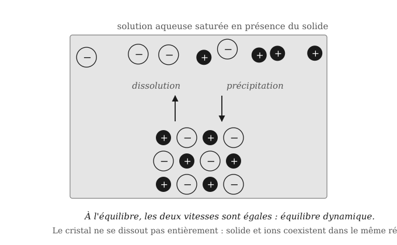
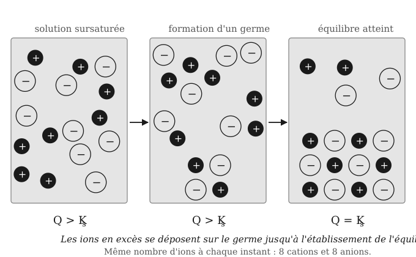
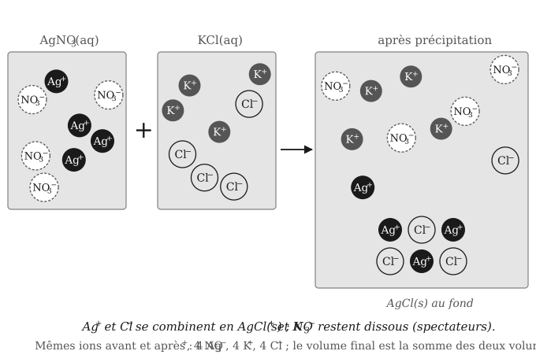
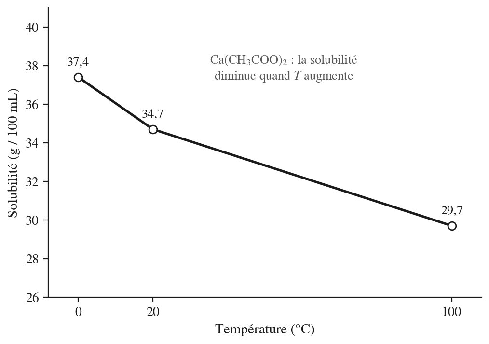

12 Équilibre chimique 2 — produit de solubilité
Enseignant·e ? Si vous avez une clé pilote (ou un jeton prof), ouvrez le suivi de votre classe.
Élève ? S’entraîner sur ce chapitre
Une remarque ? Écrivez-nous — coquille, question, suggestion.
12.1 Fiche de démarrage
Ce que nous savons déjà — Nous savons déjà qu’un équilibre chimique se caractérise par une constante \(K\) qui relie les concentrations des espèces en solution à l’état d’équilibre. Nous savons comparer le quotient réactionnel \(Q\) à \(K\) pour prédire l’évolution d’un système, et résoudre un tableau d’avancement pour trouver les concentrations à l’équilibre.
Ce que ce chapitre construit — Ce chapitre applique ces outils à un cas précis : la dissolution des sels peu solubles dans l’eau. Nous allons découvrir le produit de solubilité \(K_s\), constante d’équilibre propre à cet équilibre de dissolution, et la solubilité \(s\) qui en découle. Nous verrons aussi comment la présence d’un ion déjà dissous en solution peut réduire la quantité de sel qui se dissout.
Ce que nous saurons faire — À la fin de ce chapitre, nous serons capables de calculer \(K_s\) à partir d’une solubilité mesurée, et inversement. Nous saurons prédire si un mélange de deux solutions provoque l’apparition d’un solide, puis calculer les concentrations de chaque ion restant en solution après cette précipitation.
12.2 Rappels avant de commencer
Nous savons déjà que…
- La constante d’équilibre \(K\) est un produit d’activités chimiques à l’équilibre : l’activité d’un solide pur vaut 1, celle d’un soluté correspond à sa concentration en mol/L.
- Le quotient réactionnel \(Q\) se calcule comme \(K\) mais à n’importe quel instant : \(Q < K\) signifie que le système évolue dans le sens direct, \(Q > K\) dans le sens inverse, \(Q = K\) indique l’équilibre.
- La méthode du tableau d’avancement avec la variable \(x\) relie les concentrations initiales aux concentrations à l’équilibre et permet de résoudre l’expression de \(K\).
Ces acquis sont les points d’appui directs de ce chapitre — nous allons appliquer cette même constante \(K\) à un nouvel équilibre : celui d’un solide ionique avec ses ions dissous en solution.
Mini-test — vérifions nos acquis avant de continuer :
- Pour la réaction \(\ce{AgCl(s) <=> Ag+(aq) + Cl-(aq)}\), que vaut l’activité de \(\ce{AgCl(s)}\) dans l’expression de \(K\) ?
- Pour une réaction d’équilibre, nous mesurons \(Q > K\). Dans quel sens le système va-t-il évoluer ?
- Dans un tableau d’avancement, à quoi correspond la variable \(x\) à l’équilibre ?
Si nous répondons sans hésiter, nous sommes prêts — passons à la Zone 2. Si certaines réponses hésitent, relisons les points ci-dessus avant de continuer.
12.3 Cours et exercices
12.3.1 Les équilibres entre solides et solutions
Les équilibres entre l’état solide d’un composé et de sa forme hydratée en solution sont une application importante de la théorie des équilibres chimiques.
En chimie, un composé solide (composé moléculaire solide ou sels cristallin) en équilibre thermodynamique avec une solution est appelé précipité.
La présence d’un précipité stable résulte ainsi d’un équilibre thermodynamique entre la phase liquide (solution) et la phase solide (sel).
Apparition d’un précipité : Lorsque la quantité maximale de soluté qui peut être dissoute dans un volume donné de solvant est atteinte (état de saturation), l’ajout de soluté fait apparaître un précipité : une phase dispersée solide dans une matrice liquide.
Conception courante : On pourrait croire qu’un sel “insoluble” ne se dissout absolument pas dans l’eau. C’est inexact : tout sel ionique se dissout au moins partiellement. La distinction de solubilité entre tous les sels ne devrait pas être soluble ou insoluble, mais peu soluble ou très soluble.
Analogie : Imaginons un récipient contenant de l’eau. Tant que nous y ajoutons peu de sucre, tout se dissout. À partir d’un certain seuil, le sucre s’accumule au fond : la solution est saturée. Un sel peu soluble atteint ce seuil avec une infime quantité dissoute — mais le même équilibre est à l’œuvre.
Notation d’un équilibre entre un composé solide et sa partie dissoute en solution:
La précipitation est notée comme une équation chimique. Par convention, le solide prend la place du réactif et les ions aqueux ont la place des produits :
\[\ce{NaCl(s) <=> Na+(aq) + Cl-(aq)}\]
(précipité (solide) à gauche ; ions en solution (solution saturée) à droite)
Les ions en milieu aqueux (aq) désignent les espèces dissociées (le sel dissous) et le solide (s) désigne le sel cristallisé.
Dans ce chapitre, nous allons principalement nous concentrer sur les équilibres chimiques entre composés ioniques solides et leurs ions en solution. Les composés moléculaires n’en sont qu’une application assez simple.
12.3.1.1 FIN DE SECTION 1 — Exercices de consolidation
Exercice 1. Un élève affirme : « Le chlorure d’argent est insoluble, donc il ne libère aucun ion dans l’eau. » Cette affirmation est-elle correcte ? Justifiez en une ou deux phrases.1
Exercice 2. Écrivez l’équation de l’équilibre entre le solide et ses ions, avec les états physiques, pour \(\ce{BaSO4}\) et pour \(\ce{Ca3(PO4)2}\).2
Exercice 3. Un solide ionique est en contact avec sa solution saturée. Au niveau particulaire, pourquoi la concentration en ions ne varie-t-elle plus alors que des ions continuent de passer entre le cristal et la solution ?3
12.3.2 Constante de la loi d’action de masse K (rappel)
Comme déjà vu dans les chapitres précédents, il existe une relation générale entre les concentrations des espèces présentes à l’équilibre en solution et la constante d’équilibre K appelée constante de la loi d’action de masse K :
Pour la réaction \(\ce{aA + bB <=> cC + dD}\) :
\[K = \frac{(\alpha_C)^c \cdot (\alpha_D)^d}{(\alpha_A)^a \cdot (\alpha_B)^b}\]
Avec :
- K : constante d’équilibre
- \((\alpha_i)^{\nu_i}\) : activité chimique de l’espèce i à l’équilibre mise à la puissance de son coefficient stœchiométrique \(\nu_i\)
L’activité chimique, ou activité, d’une espèce chimique exprime l’écart entre les propriétés d’une espèce pure et les propriétés de cette même espèce dans un état standard à la même température.
Rappelons que l’activité \(\alpha_i\) d’un produit ou d’un réactif se caractérise ainsi :
- \(\alpha_i = 1\) si la substance est un solide ou un liquide pur (solvant inclus)
- \(\alpha_i = p_i/p^\circ\) (avec \(p^\circ = 1\) atm, convention de ce manuel) si la substance est un gaz
- \(\alpha_i = [X]/c^\circ\) (avec \(c^\circ = 1\) mol/L) si la substance est un soluté : numériquement, l’activité vaut la concentration en mol/L, et \(K\) n’a pas d’unité
12.3.3 Le produit de solubilité \(K_s\)
On considère la dissolution d’un solide ionique de formule \(\ce{X_\alpha Y_\beta}\).
L’équation de précipitation est décrite de la manière suivante :
\[\ce{X_\alpha Y_\beta (s) <=> \alpha X^{\beta+}(aq) + \beta Y^{\alpha-}(aq)}\]
Le produit de solubilité \(K_s\) est la constante d’équilibre correspondant à la dissolution d’un solide dans un solvant. C’est le produit ionique de la solution saturée, élevé aux puissances des coefficients stœchiométriques.
Au niveau particulaire : Dans une solution dite saturée (présence à l’équilibre du composé solide \(\ce{X_\alpha Y_\beta (s)}\)), les ions \(\ce{X^{\beta+}}\) et \(\ce{Y^{\alpha-}}\) quittent la surface du cristal à la même vitesse qu’ils y retournent. Le solide et la solution coexistent : c’est un équilibre dynamique entre la phase solide et la phase dissoute.

Représentation symbolique : Le composé ionique solide étant un solide pur, son activité (\(\alpha_i\)) est égale à 1. Les activités des ions dans un milieu aqueux correspondent à leurs concentrations exprimées en moles par litre (mol/L), divisées par la concentration de référence \(c^\circ = 1\) mol/L :
\[K_s = \frac{(\alpha_{X^{\beta+}})^\alpha \cdot (\alpha_{Y^{\alpha-}})^\beta}{(\alpha_{X_\alpha Y_\beta (s)})} = [\ce{X^{\beta+}}]^\alpha \cdot [\ce{Y^{\alpha-}}]^\beta\]
(ions en solution \(\Rightarrow \alpha = [\ ]\) ; solide \(\Rightarrow \alpha = 1\))
Écrire l’équation ionique de précipitation et l’expression de \(K_s\) pour \(\ce{NaCl}\), \(\ce{PbCl2}\) et \(\ce{Ca(OH)2}\).
\(\ce{NaCl}\) :
\[\ce{NaCl(s) <=> Na+(aq) + Cl-(aq)}\]
\[K_s = [\ce{Na+}][\ce{Cl-}]\]
\(\ce{PbCl2}\) :
\[\ce{PbCl2(s) <=> Pb^{2+}(aq) + 2 Cl-(aq)}\]
\[K_s = [\ce{Pb^{2+}}][\ce{Cl-}]^2\]
\(\ce{Ca(OH)2}\) :
\[\ce{Ca(OH)2(s) <=> Ca^{2+}(aq) + 2 OH-(aq)}\]
\[K_s = [\ce{Ca^{2+}}][\ce{OH-}]^2\]
La dissolution nécessite de connaître les dissociations des sels. Le tableau ci-dessous nous aide à dissocier correctement certains sels.
Table de solubilité des composés ioniques (cations en lignes, anions en colonnes) :
| Cation | \(\ce{Br-}\) | \(\ce{CH3COO-}\) | \(\ce{Cl-}\) | \(\ce{CO3^{2-}}\) | \(\ce{F-}\) | \(\ce{I-}\) | \(\ce{NO2-}\) | \(\ce{NO3-}\) | \(\ce{OH-}\) | \(\ce{PO4^{3-}}\) | \(\ce{S^{2-}}\) | \(\ce{SO4^{2-}}\) |
|---|---|---|---|---|---|---|---|---|---|---|---|---|
| \(\ce{Ag+}\) | I | S | I | I | S | I | S | S | I | I | I | S |
| \(\ce{Al^{3+}}\) | S | S | S | × | S | S | × | S | I | I | × | S |
| \(\ce{As^{3+}}\) | × | × | × | × | × | S | × | × | × | × | I | × |
| \(\ce{Ba^{2+}}\) | S | S | S | I | S | S | S | S | S | I | S | I |
| \(\ce{Bi^{3+}}\) | × | I | × | × | I | I | × | × | I | I | I | × |
| \(\ce{Ca^{2+}}\) | S | S | S | I | I | S | S | S | S | I | S | S |
| \(\ce{Cd^{2+}}\) | S | S | S | I | S | S | S | S | I | I | I | S |
| \(\ce{Co^{2+}}\) | S | S | S | I | S | S | S | S | I | I | I | S |
| \(\ce{Cr^{3+}}\) | I | S | I | × | I | S | × | S | I | I | I | S |
| \(\ce{Cu^{2+}}\) | S | S | S | I | S | × | S | S | I | I | I | S |
| \(\ce{Fe^{2+}}\) | S | S | S | I | I | S | × | S | I | I | I | S |
| \(\ce{Fe^{3+}}\) | S | S | S | × | S | S | × | S | I | I | I | S |
| \(\ce{Hg^{2+}}\) | S | S | S | I | × | I | S | S | I | I | I | × |
| \(\ce{K+}\) | S | S | S | S | S | S | S | S | S | S | S | S |
| \(\ce{Mg^{2+}}\) | S | S | S | I | I | S | S | S | I | I | S | S |
| \(\ce{Mn^{2+}}\) | S | S | S | I | S | S | S | S | I | I | I | S |
| \(\ce{Na+}\) | S | S | S | S | S | S | S | S | S | S | S | S |
| \(\ce{NH4+}\) | S | S | S | S | S | S | S | S | × | S | S | S |
| \(\ce{Ni^{2+}}\) | S | S | S | I | S | S | S | S | I | I | I | S |
| \(\ce{Pb^{2+}}\) | S | S | S | I | I | I | S | S | I | I | I | I |
| \(\ce{Sb^{3+}}\) | × | × | S | × | S | × | × | × | I | S | I | I |
| \(\ce{Sn^{2+}}\) | S | × | S | × | S | S | × | × | I | I | I | S |
| \(\ce{Sn^{4+}}\) | S | S | S | × | S | S | × | × | I | I | I | S |
| \(\ce{Sr^{2+}}\) | S | S | S | I | I | S | S | S | S | I | S | I |
| \(\ce{Zn^{2+}}\) | S | S | S | I | S | S | S | S | I | I | I | S |
S : solubilité dans l’eau supérieure à 1 g/L. I : solubilité dans l’eau inférieure à 1 g/L (composé peu soluble). × : le composé n’existe pas.
12.3.3.1 FIN DE SECTION 2 — Exercices de consolidation
Exercice 4. Écrivez l’équation ionique de précipitation et l’expression de \(K_s\) pour les précipités suivants :4
| Formule | Nom du composé | \(K_s\) |
|---|---|---|
| NaCl | Chlorure de sodium | 32,98 |
| \(\ce{TlBrO3}\) | Bromate de thallium(I) | \(1{,}7 \times 10^{-4}\) |
| \(\ce{PbCl2}\) | Chlorure de plomb(II) | \(1{,}6 \times 10^{-5}\) |
| \(\ce{Ca(OH)2}\) | Hydroxyde de calcium | \(7{,}8 \times 10^{-6}\) |
| TlBr | Bromure de thallium(I) | \(3{,}4 \times 10^{-6}\) |
| \(\ce{NiCO3}\) | Carbonate de nickel | \(1{,}3 \times 10^{-7}\) |
| \(\ce{CaC2O4}\) | Oxalate de calcium | \(2 \times 10^{-9}\) |
| MnS | Sulfure de manganèse(II) | \(2{,}5 \times 10^{-13}\) |
| \(\ce{Cu(OH)2}\) | Hydroxyde de cuivre(II) | \(4{,}5 \times 10^{-21}\) |
Exercice 5. Pour chaque sel dissous dans l’eau, écrivez l’équation ionique de dissociation (indiquez les ions avec leurs charges et leur état physique) ainsi que l’expression de la constante de solubilité.5
| Composé dissous |
|---|
| NaCl (aq) |
| \(\ce{KNO3}\) (aq) |
| \(\ce{CaCl2}\) (aq) |
| \(\ce{Al(NO3)3}\) (aq) |
| \(\ce{MgBr2}\) (aq) |
| \(\ce{NH4Cl}\) (aq) |
| \(\ce{Ba(NO3)2}\) (aq) |
| \(\ce{SrI2}\) (aq) |
| \(\ce{Li2SO4}\) (aq) |
| \(\ce{Na2CO3}\) (aq) |
| \(\ce{K2SO4}\) (aq) |
| \(\ce{NaCH3COO}\) (aq) |
| \(\ce{Ca(NO3)2}\) (aq) |
| \(\ce{ZnCl2}\) (aq) |
| \(\ce{Fe(NO3)3}\) (aq) |
| \(\ce{AgNO3}\) (aq) |
Exercice 6. À l’aide de la table de solubilité, indiquez pour chaque mélange de solutions si un précipité peut se former et, si oui, écrivez l’équation ionique de précipitation : (a) \(\ce{Pb(NO3)2}\) + \(\ce{KI}\) ; (b) \(\ce{CaCl2}\) + \(\ce{Na2CO3}\) ; (c) \(\ce{NaNO3}\) + \(\ce{KCl}\) ; (d) \(\ce{AgNO3}\) + \(\ce{NaBr}\) ; (e) \(\ce{BaCl2}\) + \(\ce{K2SO4}\).6
Exercice 7. Écrivez l’équation de précipitation et l’expression de \(K_s\) pour \(\ce{Ca3(PO4)2}\), \(\ce{Fe(OH)3}\) et \(\ce{Ag2S}\).7
12.3.4 La solubilité \(s\)
Formalisation : La solubilité \(s\) (en mol/L) est la quantité maximale de soluté qui peut se dissoudre dans un litre de solvant à une température donnée. La solubilité massique \(S\) (en g/L) s’obtient par \(S = s \cdot M\), où \(M\) est la masse molaire du sel (en g/mol).
Conception courante : On confond souvent \(K_s\) et la solubilité. \(K_s\) est une constante d’équilibre — elle ne dépend que de la température. La solubilité \(s\) est la concentration maximale de sel dissous dans ces conditions — elle se calcule à partir de \(K_s\) via la stœchiométrie, mais les deux grandeurs ne sont pas identiques.
Le produit de solubilité \(K_s\) est directement lié à la solubilité \(s\) (et, par conversion, à \(S\)).
Attention : cette sous-section introduit deux opérations distinctes que nous pouvons traiter séparément : (1) calculer \(s\) depuis \(K_s\) — sens direct ; (2) calculer \(K_s\) depuis \(S\) mesurée — sens inverse. Si les deux directions semblent lourdes à la première lecture, maîtrisons d’abord le sens direct avant d’aborder le sens inverse.
La solubilité permet de distinguer trois états de la solution :
| État de la solution | Concentration en sel dissous | Précipité présent ? |
|---|---|---|
| Insaturée | \(< s\) | Non |
| Saturée | \(= s\) | Non, mais limite atteinte |
| Sursaturée | \(> s\) | Oui — excès de solide au fond |
Au niveau particulaire : Dans une solution insaturée, tous les ions sont en solution. À saturation, la vitesse de dissolution égale la vitesse de recristallisation. En solution sursaturée, une partie des ions se réorganise en réseau cristallin et forme le précipité visible.
Représentation symbolique : La solubilité se calcule par le tableau d’avancement. Pour \(\ce{X_\alpha Y_\beta (s) <=> \alpha X^{\beta+}(aq) + \beta Y^{\alpha-}(aq)}\), en posant \(x = s\) :
\[K_s = (\alpha \cdot s)^\alpha \cdot (\beta \cdot s)^\beta = \alpha^\alpha \cdot \beta^\beta \cdot s^{\alpha+\beta}\]
Cas particuliers fréquents. En appliquant la relation précédente, nous obtenons :
| Type de sel | Exemples | \(K_s\) en fonction de \(s\) | \(s\) en fonction de \(K_s\) |
|---|---|---|---|
| \(\ce{XY}\) (1 : 1) | \(\ce{AgCl}\), \(\ce{BaSO4}\) | \(K_s = s^2\) | \(s = \sqrt{K_s}\) |
| \(\ce{XY2}\) ou \(\ce{X2Y}\) (1 : 2) | \(\ce{PbI2}\), \(\ce{Ag2CrO4}\) | \(K_s = 4s^3\) | \(s = \sqrt[3]{K_s/4}\) |
| \(\ce{XY3}\) (1 : 3) | \(\ce{Fe(OH)3}\) | \(K_s = 27s^4\) | \(s = \sqrt[4]{K_s/27}\) |
| \(\ce{X2Y3}\) ou \(\ce{X3Y2}\) | \(\ce{Cu3(PO4)2}\) | \(K_s = 108s^5\) | \(s = \sqrt[5]{K_s/108}\) |
écrire l’équation de précipitation du \(\ce{NaCl}\) et calculer sa solubilité \(s\) et \(S\) (\(K_s = 32{,}98\) ; \(M = 58{,}44\) g/mol).
\[\ce{NaCl(s) <=> Na+(aq) + Cl-(aq)}\]
Les coefficients valent 1 : \(K_s = [\ce{Na+}][\ce{Cl-}] = s \cdot s = s^2\). Donc
\[s = \sqrt{K_s} = \sqrt{32{,}98} = 5{,}74 \ \text{mol/L} \qquad S = s \cdot M = 5{,}74 \times 58{,}44 \approx 336 \ \text{g/L}\]
Un \(K_s\) supérieur à 1 caractérise un sel très soluble ; la définition de \(s\) reste la même.
La solubilité de \(\ce{AgCl}\) est de \(1{,}9 \times 10^{-4}\) g par 100 mL à 25 °C. Calculer son produit de solubilité \(K_s\) (\(M = 143{,}32\) g/mol).
Conversion : \(1{,}9 \times 10^{-4}\) g/100 mL \(= 1{,}9 \times 10^{-3}\) g/L, donc \(s = 1{,}9 \times 10^{-3}/143{,}32 = 1{,}33 \times 10^{-5}\) mol/L.
\[\ce{AgCl(s) <=> Ag+(aq) + Cl-(aq)} \qquad K_s = s^2 = (1{,}33 \times 10^{-5})^2 \approx 1{,}8 \times 10^{-10}\]
La solubilité de \(\ce{PbI2}\) est de 0,029 g par 100 mL à 25 °C. Calculer son produit de solubilité \(K_s\) (\(M = 461{,}0\) g/mol).
Conversion : \(0{,}029\) g/100 mL \(= 0{,}29\) g/L, donc \(s = 0{,}29/461{,}0 = 6{,}29 \times 10^{-4}\) mol/L.
\[\ce{PbI2(s) <=> Pb^{2+}(aq) + 2 I-(aq)}\]
\[K_s = [\ce{Pb^{2+}}][\ce{I-}]^2 = s\,(2s)^2 = 4s^3 = 4 \times (6{,}29 \times 10^{-4})^3 \approx 1{,}0 \times 10^{-9}\]
12.3.4.1 FIN DE SECTION 3 — Exercices de consolidation
Exercice 8. La solubilité dans l’eau de \(\ce{Cu3(PO4)2}\) est de 6,35 µg/L (\(M = 380{,}58\) g/mol). Quel est le produit de solubilité ?8
Exercice 9. Le \(K_s\) de \(\ce{AgBr}\) vaut \(5{,}3 \times 10^{-13}\) à 25 °C. Quelle est sa solubilité \(S\) en g/100 mL (\(M = 187{,}8\) g/mol) ?9
Exercice 10. Le \(K_s\) de \(\ce{Ag2CrO4}\) est égal à \(1{,}1 \times 10^{-12}\) à 25 °C. Quelle est sa solubilité \(S\) en g/100 mL (\(M = 331{,}74\) g/mol) ?10
Indication : écrire l’équation de précipitation, poser \(x = s\) dans le tableau d’avancement — les coefficients stœchiométriques de \(\ce{Ag+}\) sont 2, ce qui modifie l’expression de \(K_s\) — puis résoudre \(K_s = f(s)\).
Exercice 11. La solubilité molaire du sulfate d’argent \(\ce{Ag2SO4}\) est de \(1{,}44 \times 10^{-2}\) M. Calculez \(K_s\).11
Exercice 12. Le produit de solubilité de \(\ce{Ag2CO3}\) vaut \(8{,}5 \times 10^{-12}\). Quelle est la concentration d’une solution saturée en mol/L et en g/L (\(M = 275{,}75\) g/mol) ?12
Exercice 13. Le carbonate de sodium \(\ce{Na2CO3}\) est un solide très courant, utilisé par exemple pour adoucir les eaux calcaires. (a) Que vaut sa solubilité en mol/L si \(K_s = 1{,}2\) ? (b) Quelle est sa solubilité massique maximale en kg/L (\(M = 105{,}99\) g/mol) ?13
Exercice 14. L’hydroxyde de calcium \(\ce{Ca(OH)2}\) a un produit de solubilité \(K_s = 7{,}8 \times 10^{-6}\) (\(M = 74{,}09\) g/mol). Calculez sa solubilité molaire \(s\) et sa solubilité massique \(S\).14
Exercice 15. Le chlorure de plomb(II) \(\ce{PbCl2}\) a un produit de solubilité \(K_s = 1{,}6 \times 10^{-5}\) (\(M = 278{,}1\) g/mol). Calculez sa solubilité molaire \(s\) et sa solubilité massique \(S\).15
Exercice 16. Comparez les sels \(\ce{AgCl}\) (\(K_s = 1{,}8 \times 10^{-10}\)) et \(\ce{Ag2CrO4}\) (\(K_s = 1{,}1 \times 10^{-12}\)) : lequel a le plus petit \(K_s\) ? lequel est le plus soluble en mol/L ? Que concluons-nous sur la comparaison des \(K_s\) de deux sels ?16
Exercice 17. On introduit 5,0 mg de \(\ce{AgCl}\) dans 1,0 L d’eau à 25 °C (\(K_s = 1{,}8 \times 10^{-10}\) ; \(M = 143{,}32\) g/mol). La solution est-elle insaturée, saturée ou sursaturée ? Reste-t-il du solide ? Si oui, quelle masse ?17
12.3.5 Mélange de deux solutions sans ion commun : précipité ou pas de précipité ?
12.3.5.1 Le quotient réactionnel \(Q\) et la précipitation
Lorsqu’on mélange deux solutions contenant des ions susceptibles de former un sel peu soluble, un précipité n’apparaît que si le produit des concentrations ioniques dépasse \(K_s\).
Apparition d’un précipité ou non ? C’est le quotient réactionnel \(Q\), calculé comme \(K_s\) mais avec les concentrations juste après mélange, qui permet de trancher.
Formalisation : Lors du mélange de deux solutions ne partageant aucun ion commun, la procédure est la suivante :
- Identifier le sel peu soluble susceptible de se former.
- Calculer les concentrations des ions concernés après dilution par mélange, en supposant qu’il n’y a pas de précipitation.
- Calculer le quotient réactionnel \(Q = [\ce{X^{\beta+}}]_0^\alpha \cdot [\ce{Y^{\alpha-}}]_0^\beta\).
- Comparer \(Q\) à \(K_s\) :
| Cas | Conclusion |
|---|---|
| \(Q < K_s\) | Solution insaturée — pas de précipité |
| \(Q = K_s\) | Solution saturée — pas de précipité |
| \(Q > K_s\) | Solution sursaturée — précipité jusqu’à \(Q = K_s\) |
Au niveau particulaire : Si \(Q > K_s\), la solution contient plus d’ions que l’équilibre ne peut en tolérer. À l’échelle particulaire, la fréquence des rencontres entre ions opposés dépasse le seuil à partir duquel les attractions électrostatiques les maintiennent ensemble plutôt qu’en solution. Des ions se réorganisent spontanément en réseau cristallin — c’est la nucléation du précipité — jusqu’à ce que les concentrations restantes satisfassent \(K_s\).

Représentation symbolique : Après vérification que \(Q > K_s\), on calcule les concentrations réelles à l’équilibre par le tableau d’avancement, en notant \(x\) la concentration de sel précipitée.
Si, à la suite du mélange de deux solutions sans précipité, contenant chacune un composé ionique, une précipitation est observée, cela signifie qu’un sel peu soluble a pu se former. Les ions formant le précipité proviennent alors de sources différentes. Les concentrations utilisées dans le calcul de \(Q\) ne sont donc plus liées à la stœchiométrie du précipité.
Expérience : réaction de précipitation entre une solution d’\(\ce{AgNO3}\) 1 M et une solution de KCl 1 M.

Les ions \(\ce{K+}\) et \(\ce{NO3-}\) restent en solution (sels solubles selon la table) ; seuls \(\ce{Ag+}\) et \(\ce{Cl-}\) forment le précipité :
\[\ce{AgNO3(aq) + KCl(aq) -> AgCl(s) + KNO3(aq)}\]
\[\ce{AgCl(s) <=> Ag+(aq) + Cl-(aq)} \qquad K_s = [\ce{Ag+}][\ce{Cl-}] = 1{,}8 \times 10^{-10}\]
précipitation de l’iodure de plomb(II). Mélangeons une solution de nitrate de plomb(II) \(\ce{Pb(NO3)2}\) et une solution d’iodure de potassium \(\ce{KI}\).
Deux sels pourraient se former : \(\ce{KNO3}\), très soluble (nitrates et sels de potassium sont solubles selon la table), et \(\ce{PbI2}\), peu soluble. Seul \(\ce{PbI2}\) peut précipiter (précipité jaune) :
\[\ce{Pb(NO3)2(aq) + 2 KI(aq) -> PbI2(s) + 2 KNO3(aq)}\]
Les ions \(\ce{K+}\) et \(\ce{NO3-}\) ne participent pas à la réaction. L’équation de précipitation se réduit à
\[\ce{Pb^{2+}(aq) + 2 I-(aq) -> PbI2(s)} \qquad K_s = [\ce{Pb^{2+}}][\ce{I-}]^2 = 1{,}0 \times 10^{-9}\]
Il y a précipitation si \(Q = [\ce{Pb^{2+}}]_0 \cdot [\ce{I-}]_0^2 > K_s\).
12.3.5.2 Calculs des concentrations après précipitation sans approximation
Observe-t-on l’apparition d’un précipité lors du mélange d’une solution de \(\ce{BaCl2}\) et d’une solution de \(\ce{Na2SO4}\) ?
(équation globale : \(\ce{BaCl2(aq) + Na2SO4(aq) <=> 2 NaCl(aq) + BaSO4(s)}\) — question : \(\ce{BaSO4(s)}\) apparaît-il ou non ?)
La réponse exige d’identifier un composé ayant une faible solubilité.
- NaCl n’a aucune chance de précipiter, car les composés ioniques des métaux de la première colonne sont tous très solubles.
- \(\ce{BaSO4}\) est quant à lui faiblement soluble. Il pourrait avoir précipitation.
Pour savoir si on observe une précipitation de \(\ce{BaSO4}\), nous devons appliquer la procédure suivante :
- on calcule les concentrations en ions \(\ce{Ba^{2+}}\) et \(\ce{SO4^{2-}}\) après mélange, en faisant l’hypothèse qu’il n’y a pas de précipitation.
- On introduit ensuite ces valeurs dans l’expression du quotient réactionnel \(Q = [\ce{Ba^{2+}}]_0 \cdot [\ce{SO4^{2-}}]_0\).
- Si le quotient réactionnel \(Q\) dépasse le produit de solubilité \(K_s = [\ce{Ba^{2+}}] \cdot [\ce{SO4^{2-}}]\) de \(\ce{BaSO4}\), la précipitation a lieu.
- On calcule les concentrations restantes en solution après précipitation en considérant une concentration \(x\) de sel précipité et en soustrayant \(x\) des concentrations des ions précipités.
En conclusion, nous avons trois possibilités :
Cas 1 \(Q < K_s\) — solution insaturée : pas de précipité.
Cas 2 \(Q = K_s\) — solution saturée : pas de précipité.
Cas 3 \(Q > K_s\) — solution sursaturée : précipité, jusqu’à ce que le \(Q\) soit égal à \(K_s\).
Dans le cas 3, \(Q > K_s\), solution sursaturée, la résolution demande des calculs souvent complexes. Dans certains cas où \(Q \gg K_s\), il est possible d’approximer que le limitant se transforme dans un premier temps entièrement en précipité afin de simplifier les calculs.
12.3.5.3 Calculs des concentrations après précipitation avec approximation
Lorsque \(Q \gg K_s\), la précipitation de l’ion limitant est presque totale. L’approximation consiste à :
- faire précipiter entièrement l’ion limitant ;
- calculer la concentration de l’autre ion par différence ;
- retrouver la concentration résiduelle de l’ion limitant avec \(K_s\).
reprenons le mélange de 20 mL de \(\ce{BaCl2}\) 0,001 M et de 50 mL de \(\ce{Na2SO4}\) 0,001 M (\(K_s(\ce{BaSO4}) = 1{,}1 \times 10^{-10}\)).
Volume total : 70 mL. \([\ce{Ba^{2+}}]_0 = 2{,}86 \times 10^{-4}\) M et \([\ce{SO4^{2-}}]_0 = 7{,}14 \times 10^{-4}\) M, donc \(Q = 2{,}04 \times 10^{-7}\), soit environ \(1{,}9 \times 10^{3}\) fois \(K_s\) : l’approximation est adaptée.
- \(\ce{Ba^{2+}}\) est limitant (\(2{,}86 \times 10^{-4} < 7{,}14 \times 10^{-4}\)) : il précipite entièrement.
- Il reste \([\ce{SO4^{2-}}] \approx 7{,}143 \times 10^{-4} - 2{,}857 \times 10^{-4} = 4{,}286 \times 10^{-4}\) M.
- \([\ce{Ba^{2+}}] = K_s/[\ce{SO4^{2-}}] = 1{,}1 \times 10^{-10}/4{,}286 \times 10^{-4} = 2{,}57 \times 10^{-7}\) M.
Vérification : \(2{,}57 \times 10^{-7}\) M est négligeable devant \(2{,}86 \times 10^{-4}\) M (moins de 0,1 %). La résolution sans approximation (équation du second degré) donne \(2{,}565 \times 10^{-7}\) M : l’écart est inférieur à 0,1 %.
Attention : l’approximation n’est pas justifiée lorsque \(Q\) dépasse à peine \(K_s\) ; il faut alors résoudre l’équation sans approximation.
12.3.5.4 FIN DE SECTION 4 — Exercices de consolidation
Exercice 18. On mélange 20 mL d’une solution 0,001 M de \(\ce{BaCl2}\) et 50 mL d’une solution 0,001 M de \(\ce{Na2SO4}\). Sachant que le produit de solubilité de \(\ce{BaSO4}\) vaut \(1{,}1 \times 10^{-10}\), quelle quantité de \(\ce{BaSO4}\) précipite, et quelles sont les concentrations des 4 ions en solution après précipitation (résolution sans approximation) ?18
Exercice 19. On introduit, dans 1 L de solution de nitrate d’argent 0,1 M, 10 mg de chlorure de plomb \(\ce{PbCl2}\) solide, complètement dissous (\(M = 278{,}1\) g/mol). Observe-t-on un précipité ? Si oui, lequel ? Quelle est la masse de précipité que nous pourrions observer ? On donne \(K_s(\ce{AgCl}) = 1{,}8 \times 10^{-10}\).19
Exercice 20. On mélange 200 mL d’une solution 0,01 M de \(\ce{K3PO4}\) avec 50 mL d’une solution 0,001 M de \(\ce{AgNO3}\). Sachant que le produit de solubilité de \(\ce{Ag3PO4}\) vaut \(1{,}05 \times 10^{-16}\), peut-on prévoir que l’on observera une précipitation de ce composé ? Quelles sont les concentrations molaires des 4 ions présents en solution ?20
Exercice 21. On ajoute 200 mL de \(\ce{BaCl2}\) 0,0040 M à 600 mL de \(\ce{K2SO4}\) 0,008 M. Y aura-t-il formation d’un précipité ? \(K_s\) de \(\ce{BaSO4}\) vaut \(1{,}1 \times 10^{-10}\). Calculez les concentrations à l’équilibre avec approximation, puis comparez à l’aide d’un calculateur comme wolframalpha.com la réponse sans approximation.21
Exercice 22. Si l’on verse 2,00 mL de \(\ce{NaOH}\) 0,200 M dans 1,00 L de \(\ce{CaCl2}\) 0,100 M, y aura-t-il formation d’un précipité ? \(K_s\) de \(\ce{Ca(OH)2}\) vaut \(7{,}8 \times 10^{-6}\).22
Exercice 23. On mélange 25 mL de \(\ce{Pb(NO3)2}\) 0,010 M et 25 mL de \(\ce{NaCl}\) 0,10 M. \(K_s(\ce{PbCl2}) = 1{,}6 \times 10^{-5}\). (a) Un précipité se forme-t-il ? (b) Même question si la solution de \(\ce{NaCl}\) est 0,20 M.23
Exercice 24. On mélange 10 mL de \(\ce{AgNO3}\) \(1{,}0 \times 10^{-3}\) M et 10 mL de \(\ce{NaCl}\) \(1{,}0 \times 10^{-3}\) M (\(K_s(\ce{AgCl}) = 1{,}8 \times 10^{-10}\) ; \(M = 143{,}32\) g/mol). Un précipité se forme-t-il ? Calculez \([\ce{Ag+}]\) à l’équilibre et la masse de précipité.24
12.3.6 Mélange de deux solutions ayant un ion commun (l’effet ion commun)
L’effet ion commun apparaît lorsqu’on mélange un solide (ou une solution salée) à une autre solution contenant déjà un des ions qui composent le précipité. La solubilité du sel diminue alors par effet d’ion commun.
Formalisation : L’effet ion commun est le déplacement d’un équilibre de dissolution causé par la présence en solution d’un ion qui entre dans l’expression de \(K_s\) du sel considéré. Conformément au principe de Le Châtelier, l’ajout d’un produit déplace l’équilibre dans le sens inverse — ici, vers la recristallisation. La solubilité \(s'\) du sel en présence de l’ion commun est donc inférieure à sa solubilité \(s\) dans l’eau pure.
Au niveau particulaire : La concentration accrue d’un des ions en solution augmente la fréquence des collisions entre cet ion et la surface du cristal, favorisant la recristallisation par rapport à la dissolution. L’équilibre se rétablit à une solubilité plus faible.
Représentation symbolique : On reprend le tableau d’avancement en intégrant la concentration initiale \(c_0\) de l’ion commun. Pour \(\ce{AgCl(s) <=> Ag+(aq) + Cl-(aq)}\) dans une solution contenant déjà \([\ce{Cl-}]_0 = c_0\) :
\[K_s = s'(s' + c_0)\]
Si \(s' \ll c_0\) (condition à vérifier après le calcul) :
\[K_s \approx s' \cdot c_0 \implies s' \approx \frac{K_s}{c_0}\]
Pour un sel de type 1 : 1 comme \(\ce{AgCl}\), cette condition est satisfaite dès que \(c_0 \gg \sqrt{K_s}\). Pour un sel comme \(\ce{PbI2}\), où \([\ce{I-}] = c_0 + 2s'\), il faut vérifier que \(2s' \ll c_0\).
Quelle est la solubilité de \(\ce{AgCl}\) (\(K_s = 1{,}8 \times 10^{-10}\)) dans une solution de \(\ce{NaCl}\) 0,55 M ? Est-elle identique à la solubilité dans l’eau pure ?
Dans l’eau pure : \(s = \sqrt{K_s} = 1{,}34 \times 10^{-5}\) M. Dans la solution de \(\ce{NaCl}\), \([\ce{Cl-}]_0 = c_0 = 0{,}55\) M :
\[K_s = s'(s' + 0{,}55) \approx 0{,}55\, s' \implies s' = \frac{1{,}8 \times 10^{-10}}{0{,}55} = 3{,}3 \times 10^{-10} \ \text{M}\]
Vérification : \(s' \ll 0{,}55\) M. La solubilité est environ \(4{,}1 \times 10^{4}\) fois plus faible que dans l’eau pure.
Calculer la solubilité de \(\ce{PbI2}\) (\(K_s = 1{,}0 \times 10^{-9}\)) dans une solution de \(\ce{CaI2}\) à \(5 \times 10^{-6}\) M.
\([\ce{I-}]_0 = 2 \times 5 \times 10^{-6} = 10^{-5}\) M.
\[\ce{PbI2(s) <=> Pb^{2+}(aq) + 2 I-(aq)}\]
Avec l’approximation \([\ce{I-}]_{eq} \approx 10^{-5}\) M :
\[s' \approx \frac{K_s}{(10^{-5})^2} = \frac{1{,}0 \times 10^{-9}}{10^{-10}} = 10 \ \text{mol/L}\]
Attention : ce résultat est physiquement absurde. L’approximation suppose \(2s' \ll [\ce{I-}]_0\), or elle conduit à \(2s' = 20\) mol/L, bien supérieur à \([\ce{I-}]_0 = 10^{-5}\) M : la condition de validité n’est pas satisfaite. Sans approximation (résolution numérique de \(s'\,(10^{-5} + 2s')^2 = K_s\)), on obtient \(s' \approx 6{,}27 \times 10^{-4}\) M — proche de la solubilité dans l’eau pure (\(s = 6{,}30 \times 10^{-4}\) M). L’ion commun est ici si dilué qu’il n’affecte presque pas la solubilité : le \(\ce{PbI2}\) qui se dissout apporte lui-même \(2s \approx 1{,}3 \times 10^{-3}\) M d’ions iodure, bien plus que les \(10^{-5}\) M initiaux.
Question de contrôle : après avoir appliqué l’approximation, vérifier que \(s'\) (ou \(2s'\) pour \(\ce{PbI2}\)) est bien très inférieur à la concentration initiale \(c_0\) de l’ion commun. Si ce n’est pas le cas, résoudre sans approximation ou utiliser un solveur numérique.
Par exemple l’ajout de AgCl (s), sel peu soluble, à une solution contenant du \(\ce{AgNO3}\) (aq) contribue dans un premier temps à une augmentation de la concentration totale en solution de l’ion argent :
\[\ce{AgCl(s) + AgNO3(aq) -> Ag+(aq) + Cl-(aq) + NO3-(aq)}\]
L’augmentation de \([\ce{Ag+}]\) par la présence d’\(\ce{Ag^{+}}\) en solution rendra ainsi le quotient \(Q\) supérieur au produit de solubilité :
\[Q = [\ce{Ag+}]_0 [\ce{Cl-}]_0 > K_s\]
Pour établir l’équilibre, il y aura donc formation d’un précipité de AgCl jusqu’à ce que la valeur de \(Q\) soit de nouveau égale à celle de \(K_s\).
L’ajout d’un ion \(\ce{Ag^{+}}\) déjà présent dans la solution se solde donc par une diminution de la solubilité du sel AgCl en solution.
Cet exemple montre ce que l’on appelle l’effet d’ion commun, c’est-à-dire le déplacement d’un équilibre causé par la présence d’un ion commun.
12.3.6.1 FIN DE SECTION 5 — Exercices de consolidation
Exercice 25. Calculez la solubilité du chromate d’argent dans une solution de nitrate d’argent 0,01 M, puis comparez-la à la solubilité dans l’eau pure \(s = 6{,}5 \times 10^{-5}\) M. \(K_s(\ce{Ag2CrO4}) = 1{,}1 \times 10^{-12}\).25
Exercice 26. Considérons l’iodure de plomb \(\ce{PbI2}\), \(K_s = 1{,}0 \times 10^{-9}\). (a) Que vaut sa solubilité en mol/L dans l’eau pure ? (b) Que vaut sa solubilité dans une solution d’iodure de potassium 0,1 M ? (c) Que vaut sa solubilité dans une solution d’iodure de calcium à \(5 \times 10^{-6}\) M (avec et sans approximation) ?26
Exercice 27. Calculez la solubilité du chlorure d’argent \(\ce{AgCl}\) (\(M = 143{,}32\) g/mol), en mol/L puis en g/L, dans une solution de nitrate d’argent \(\ce{AgNO3}\) \(6{,}5 \times 10^{-3}\) M. La solubilité de \(\ce{AgCl}\) dans l’eau pure est de \(1{,}9 \times 10^{-3}\) g/L, ce qui correspond à \(K_s \approx 1{,}76 \times 10^{-10}\).27
Exercice 28. Calculez les solubilités, à 25 °C, du sulfate de baryum en mol/L : (a) dans l’eau ; (b) dans une solution de nitrate de baryum 0,010 M. \(K_s(\ce{BaSO4}) = 1{,}1 \times 10^{-10}\).28
Exercice 29. Calculez la solubilité, à 25 °C, du chromate d’argent \(\ce{Ag2CrO4}\) en mol/L dans une solution de chromate de potassium \(\ce{K2CrO4}\) 0,005 M. Comparez-la à celle dans l’eau. \(K_s(\ce{Ag2CrO4}) = 1{,}1 \times 10^{-12}\).29
Exercice 30. Calculez la solubilité de \(\ce{PbCl2}\) (\(K_s = 1{,}6 \times 10^{-5}\)) dans une solution de \(\ce{NaCl}\) 0,20 M avec approximation, vérifiez l’approximation, puis comparez à la solubilité dans l’eau pure.30
12.3.7 Précipitation due à un changement de température
Au-delà d’une certaine quantité de sel dissous, qui dépend de la température, le sel ne se dissout plus : la solution est dite « saturée ». Cette limite est fixée par \(K_s\), et \(K_s\) change avec la température.
Conception courante : On croit souvent que chauffer une solution favorise toujours la dissolution d’un sel. C’est vrai pour la majorité des sels dont la dissolution est endothermique — mais certains composés ioniques ont une solubilité qui diminue avec la température. Pour eux, c’est en chauffant qu’un précipité peut se former.
Analogie : Pensons à la vapeur d’eau qui se condense sur un miroir froid : c’est la baisse de température qui provoque le changement de phase. Pour les sels à solubilité décroissante, c’est l’élévation de température qui “expulse” le soluté hors de la solution. La limite de cette analogie : la condensation est un changement d’état physique ; ici, c’est un équilibre ionique dont la constante \(K_s\) dépend de \(T\) via la relation de Van’t Hoff.
Formalisation : Puisque \(K_s\) est une constante d’équilibre, elle dépend de la température selon la relation de Van’t Hoff (formalisée au chapitre 9). Deux cas sont possibles :
- Si la dissolution est endothermique (\(\Delta_r H^\circ > 0\)) : \(K_s\) augmente avec \(T\) — le sel se dissout davantage à chaud.
- Si la dissolution est exothermique (\(\Delta_r H^\circ < 0\)) : \(K_s\) diminue avec \(T\) — le sel se dissout moins à chaud, et un précipité peut apparaître par chauffage.
Attention : cette évolution inverse de la solubilité avec la température ne s’observe qu’avec certains composés ioniques. Les composés moléculaires organiques ont une solubilité qui croît systématiquement avec \(T\) — ce comportement inverse ne les concerne pas.
Au niveau particulaire : Pour un sel dont la dissolution est exothermique, la dissolution libère de l’énergie vers le milieu. Chauffer la solution revient à apporter de l’énergie : conformément au principe de Le Châtelier, l’équilibre se déplace dans le sens qui l’absorbe, donc vers la recristallisation (sens endothermique), et les ions repassent de la solution au réseau cristallin.
Représentation symbolique : La dépendance de \(K_s\) en \(T\) est donnée par la relation de Van’t Hoff :
\[\ln\frac{K_s(T_2)}{K_s(T_1)} = -\frac{\Delta_r H^\circ}{R} \left(\frac{1}{T_2} - \frac{1}{T_1}\right)\]
L’acétate de calcium \(\ce{Ca(CH3COO)2}\) présente la solubilité suivante :
| Température | \(K_s\) | Solubilité (g/100 mL) |
|---|---|---|
| \(0\ ^\circ\)C | 53 | 37,4 |
| \(20\ ^\circ\)C | 42 | 34,7 |
| \(100\ ^\circ\)C | 26 | 29,7 |
La solubilité diminue avec la température : la dissolution de \(\ce{Ca(CH3COO)2}\) est exothermique. Une solution saturée à \(20\ ^\circ\)C contient 34,7 g/100 mL. Si on la chauffe à \(100\ ^\circ\)C, la solubilité tombe à 29,7 g/100 mL : la différence, soit \(34{,}7 - 29{,}7 = 5{,}0\) g par 100 mL de solution, précipite.

Test de cohérence. Pour \(\ce{Ca(CH3COO)2(s) <=> Ca^{2+}(aq) + 2 CH3COO-(aq)}\), \(K_s = 4s^3\). Avec \(M = 158{,}17\) g/mol, les solubilités du tableau donnent \(s = 2{,}37\) ; \(2{,}19\) et \(1{,}88\) mol/L à 0, 20 et 100 °C, d’où \(4s^3 \approx 53\) ; \(42\) et \(26\) : les deux colonnes du tableau sont cohérentes. Aux concentrations élevées de ce tableau, remplacer les activités par les concentrations reste une approximation.
Entre 0 et 100 °C, la relation de Van’t Hoff donne
\[\Delta_r H^\circ = -R\,\frac{\ln\left(K_s(373\,\text{K})/K_s(273\,\text{K})\right)}{1/373 - 1/273} = -8{,}314 \times \frac{\ln(26/53)}{-9{,}81 \times 10^{-4}} \approx -6{,}0 \ \text{kJ/mol}\]
La valeur est négative : la dissolution est exothermique, ce qui confirme la diminution de la solubilité avec la température.
12.3.7.1 FIN DE SECTION 6 — Exercices de consolidation
Exercice 31. Une solution de \(\ce{Ca(CH3COO)2}\) de volume 250 mL, saturée à 20 °C, est chauffée à 100 °C. Quelle masse de sel précipite-t-elle (le volume est supposé constant) ?31
Exercice 32. Pour \(\ce{Ca(CH3COO)2}\), \(K_s = 53\) à 0 °C et \(K_s = 26\) à 100 °C. Calculez \(\Delta_r H^\circ\) de dissolution (\(R = 8{,}314\) J/(mol·K)). La dissolution est-elle endothermique ou exothermique ?32
Exercice 33. La dissolution d’un sel a pour enthalpie \(\Delta_r H^\circ = +25\) kJ/mol. Une solution saturée de ce sel est refroidie : se forme-t-il un précipité ? Justifiez à l’aide de la relation de Van’t Hoff.33
Exercices de synthèse
Le fluorure de calcium \(\ce{CaF2}\) a un \(K_s = 1{,}6 \times 10^{-10}\). Calculez sa solubilité molaire \(s\) et sa solubilité massique \(S\).34
La solubilité du sulfate de baryum \(\ce{BaSO4}\) dans l’eau à \(25\ ^\circ\)C est de \(2{,}4 \times 10^{-3}\) g/L. Calculez son produit de solubilité \(K_s\).35
On dispose d’une solution contenant \(\ce{Pb^{2+}}\) à \(1{,}0 \times 10^{-3}\) M et \(\ce{SO4^{2-}}\) à \(1{,}0 \times 10^{-4}\) M. \(K_s(\ce{PbSO4}) = 1{,}8 \times 10^{-8}\). Un précipité se forme-t-il ?36
On mélange 100 mL d’une solution de \(\ce{Pb(NO3)2}\) à \(0{,}020\) M et 100 mL d’une solution de \(\ce{Na2SO4}\) à \(0{,}010\) M. \(K_s(\ce{PbSO4}) = 1{,}8 \times 10^{-8}\). Calculez les concentrations de \(\ce{Pb^{2+}}\) et \(\ce{SO4^{2-}}\) à l’équilibre.37
Calculez la solubilité de \(\ce{AgCl}\) (\(K_s = 1{,}8 \times 10^{-10}\)) dans une solution de \(\ce{CaCl2}\) à \(0{,}10\) M. Comparez à la solubilité dans l’eau pure.38
On dispose d’une solution de \(\ce{NaCl}\) à \(0{,}050\) M. On y ajoute du \(\ce{AgNO3}\) solide jusqu’à saturation en \(\ce{AgCl}\) (\(K_s = 1{,}8 \times 10^{-10}\)), sans variation de volume. Quelle est la concentration en \(\ce{Ag+}\) à l’équilibre ?39
Le carbonate de magnésium \(\ce{MgCO3}\) a \(K_s = 1{,}2 \times 10^{-5}\). Calculez \(\Delta_r H^\circ\) de sa dissolution à l’aide des enthalpies de formation du CRM. Sa solubilité augmente-t-elle ou diminue-t-elle si on chauffe la solution ?40
L’hydroxyde de fer(III) \(\ce{Fe(OH)3}\) a \(K_s = 2{,}7 \times 10^{-39}\). Calculez sa solubilité molaire \(s\) dans l’eau pure, puis la concentration en \(\ce{OH-}\) à l’équilibre.41
On mélange 50 mL de \(\ce{AgNO3}\) à \(1{,}0 \times 10^{-3}\) M et 50 mL de \(\ce{Na3PO4}\) à \(1{,}0 \times 10^{-4}\) M. \(K_s(\ce{Ag3PO4}) = 1{,}05 \times 10^{-16}\). Un précipité se forme-t-il ? Justifiez par le calcul de \(Q\).42
Une solution saturée de \(\ce{PbI2}\) (\(K_s = 1{,}0 \times 10^{-9}\)) est préparée à \(25\ ^\circ\)C. On ajoute ensuite \(\ce{KI}\) solide jusqu’à porter \([\ce{I-}]\) à \(0{,}10\) M. Calculez la nouvelle solubilité \(s'\) de \(\ce{PbI2}\) et le facteur de réduction par rapport à l’eau pure.43
S’entraîner sur Balmer-Cloud
Pour fixer les notions de ce chapitre, nous vous proposons de vous entraîner sur Balmer-Cloud : des questions à choix multiples avec un retour immédiat, et un suivi de votre maîtrise notion par notion.
12.4 Pour aller plus loin
Ces défis s’adressent à ceux qui veulent aller réellement plus loin. Ils exigent de mobiliser les notions de Zone 2 dans des contextes nouveaux.
Défi A — Approfondissement : la relation de Van’t Hoff appliquée à un produit de solubilité
Le produit de solubilité de \(\ce{PbI2}\) à \(25\ ^{\circ}\)C (\(298\) K) vaut \(K_s = 1{,}0 \times 10^{-9}\). Sa dissolution est endothermique, avec \(\Delta_r H^\circ = +61\) kJ/mol.
Calculez le produit de solubilité \(K_s\) de \(\ce{PbI2}\) à \(50\ ^{\circ}\)C (\(323\) K), en utilisant la relation de Van’t Hoff vue en Zone 2. La solubilité de ce sel augmente-t-elle ou diminue-t-elle avec la température, et ce résultat est-il cohérent avec le sens de la dissolution ?44
Défi B — Transfert : précipitation sélective en chimie analytique environnementale
Les eaux usées d’une industrie contiennent simultanément des ions \(\ce{Pb^{2+}}\) et \(\ce{Ca^{2+}}\), chacun à \(5{,}0 \times 10^{-3}\) M. Un traitement consiste à ajouter progressivement une solution de \(\ce{Na2SO4}\) pour précipiter sélectivement le plomb sous forme de \(\ce{PbSO4}\), sans précipiter le calcium.
On donne : \(K_s(\ce{PbSO4}) = 1{,}8 \times 10^{-8}\) et \(K_s(\ce{CaSO4}) = 3{,}7 \times 10^{-5}\).
- Calculez la concentration en \(\ce{SO4^{2-}}\) nécessaire pour amorcer la précipitation de \(\ce{PbSO4}\), puis celle nécessaire pour amorcer la précipitation de \(\ce{CaSO4}\).
- Existe-t-il une plage de concentration en \(\ce{SO4^{2-}}\) permettant de précipiter \(\ce{Pb^{2+}}\) sans toucher \(\ce{Ca^{2+}}\) ?
- Quelle est la concentration résiduelle en \(\ce{Pb^{2+}}\) au moment où \(\ce{CaSO4}\) commence à précipiter ?45
Défi C — Ouverture : \(K_s\) peut-il vraiment être constant ?
Dans toute la Zone 2, nous avons traité \(K_s\) comme une constante ne dépendant que de la température. Cette hypothèse est-elle toujours justifiée en pratique ?
Réfléchissez aux situations suivantes et argumentez pour chacune si \(K_s\) reste un outil fiable ou si des corrections seraient nécessaires :
- Une solution très concentrée en ions étrangers (par exemple \(\ce{NaNO3}\) à 1 M) modifie-t-elle la valeur effective de \(K_s\) ? Quel concept physico-chimique est en jeu ?
- Pour des sels dont le cation est susceptible de former des complexes avec des ligands présents en solution (par exemple \(\ce{Ag+}\) en présence d’ammoniac), la solubilité mesurée coïncide-t-elle avec celle prédite par \(K_s\) seul ?
- À quelle condition l’expression simplifiée \(K_s = [\ce{X^{\beta+}}]^\alpha \cdot [\ce{Y^{\alpha-}}]^\beta\) est-elle rigoureusement exacte ?46
12.5 Mots-clés
Produit de solubilité (\(K_s\)) : constante d’équilibre de la dissolution d’un solide ionique dans l’eau ; produit ionique de la solution saturée, soit le produit des concentrations ioniques à l’équilibre élevées à leurs coefficients stœchiométriques.
Solubilité (\(s\)) : concentration maximale d’un sel dissous à l’équilibre dans un solvant à température donnée, en mol/L ; liée à \(K_s\) par la stœchiométrie de la dissolution.
Solubilité massique (\(S\)) : solubilité exprimée en g/L, obtenue par \(S = s \cdot M\) où \(M\) est la masse molaire du sel.
Précipité : sel solide en équilibre thermodynamique avec une solution saturée ; se forme lorsque le quotient réactionnel \(Q\) dépasse \(K_s\).
Quotient réactionnel (\(Q\)) : quotient réactionnel appliqué à la dissolution, produit des concentrations ioniques à un instant donné, de même forme que \(K_s\) ; \(Q < K_s\) : solution insaturée, \(Q = K_s\) : solution saturée, \(Q > K_s\) : précipitation.
États de saturation : une solution est insaturée si la concentration en sel dissous est inférieure à \(s\) (pas de précipité), saturée si elle est égale à \(s\) (limite atteinte), sursaturée si elle la dépasse (précipité présent).
Effet ion commun : diminution de la solubilité d’un sel peu soluble causée par la présence en solution d’un de ses ions constitutifs ; conséquence du principe de Le Châtelier.
Table de solubilité : tableau croisant cations et anions qui indique si un composé ionique est soluble (S, plus de 1 g/L) ou peu soluble (I, moins de 1 g/L) dans l’eau ; sert à identifier le précipité susceptible de se former.
Solubilité et température : \(K_s\) dépend de la température selon la relation de Van’t Hoff ; la solubilité augmente avec \(T\) si la dissolution est endothermique et diminue si elle est exothermique, ce qui peut provoquer une précipitation par chauffage ou par refroidissement.
12.6 Corrigés des exercices
Non. Tout sel ionique se dissout au moins partiellement : \(\ce{AgCl}\) est peu soluble, pas insoluble. Dans une solution saturée, \(\ce{AgCl(s)}\) est en équilibre avec \(\ce{Ag+(aq)}\) et \(\ce{Cl-(aq)}\), présents en très faible concentration.↩︎
\(\ce{BaSO4(s) <=> Ba^{2+}(aq) + SO4^{2-}(aq)}\) ; \(\ce{Ca3(PO4)2(s) <=> 3 Ca^{2+}(aq) + 2 PO4^{3-}(aq)}\).↩︎
C’est un équilibre dynamique : la vitesse à laquelle les ions quittent le cristal (dissolution) est égale à la vitesse à laquelle ils y reviennent (recristallisation). Le bilan est nul, donc les concentrations restent constantes, mais les échanges se poursuivent.↩︎
NaCl : \(\ce{NaCl(s) <=> Na+(aq) + Cl-(aq)}\), \(K_s = [\ce{Na+}][\ce{Cl-}]\). \(\ce{TlBrO3}\) : \(\ce{TlBrO3(s) <=> Tl+(aq) + BrO3-(aq)}\), \(K_s = [\ce{Tl+}][\ce{BrO3-}]\). \(\ce{PbCl2}\) : \(\ce{PbCl2(s) <=> Pb^{2+}(aq) + 2 Cl-(aq)}\), \(K_s = [\ce{Pb^{2+}}][\ce{Cl-}]^2\). \(\ce{Ca(OH)2}\) : \(\ce{Ca(OH)2(s) <=> Ca^{2+}(aq) + 2 OH-(aq)}\), \(K_s = [\ce{Ca^{2+}}][\ce{OH-}]^2\). TlBr : \(\ce{TlBr(s) <=> Tl+(aq) + Br-(aq)}\), \(K_s = [\ce{Tl+}][\ce{Br-}]\). \(\ce{NiCO3}\) : \(\ce{NiCO3(s) <=> Ni^{2+}(aq) + CO3^{2-}(aq)}\), \(K_s = [\ce{Ni^{2+}}][\ce{CO3^{2-}}]\). \(\ce{CaC2O4}\) : \(\ce{CaC2O4(s) <=> Ca^{2+}(aq) + C2O4^{2-}(aq)}\), \(K_s = [\ce{Ca^{2+}}][\ce{C2O4^{2-}}]\). MnS : \(\ce{MnS(s) <=> Mn^{2+}(aq) + S^{2-}(aq)}\), \(K_s = [\ce{Mn^{2+}}][\ce{S^{2-}}]\). \(\ce{Cu(OH)2}\) : \(\ce{Cu(OH)2(s) <=> Cu^{2+}(aq) + 2 OH-(aq)}\), \(K_s = [\ce{Cu^{2+}}][\ce{OH-}]^2\).↩︎
Chaque sel est un solide ionique qui se dissocie en ses ions ; tous sont très solubles, donc \(K_s\) n’a ici qu’une valeur formelle (comparer avec \(K_s(\ce{NaCl}) = 32{,}98\)). \(\ce{NaCl(s) <=> Na+(aq) + Cl-(aq)}\), \([\ce{Na+}][\ce{Cl-}]\) ; \(\ce{KNO3(s) <=> K+(aq) + NO3-(aq)}\), \([\ce{K+}][\ce{NO3-}]\) ; \(\ce{CaCl2(s) <=> Ca^{2+}(aq) + 2 Cl-(aq)}\), \([\ce{Ca^{2+}}][\ce{Cl-}]^2\) ; \(\ce{Al(NO3)3(s) <=> Al^{3+}(aq) + 3 NO3-(aq)}\), \([\ce{Al^{3+}}][\ce{NO3-}]^3\) ; \(\ce{MgBr2(s) <=> Mg^{2+}(aq) + 2 Br-(aq)}\), \([\ce{Mg^{2+}}][\ce{Br-}]^2\) ; \(\ce{NH4Cl(s) <=> NH4+(aq) + Cl-(aq)}\), \([\ce{NH4+}][\ce{Cl-}]\) ; \(\ce{Ba(NO3)2(s) <=> Ba^{2+}(aq) + 2 NO3-(aq)}\), \([\ce{Ba^{2+}}][\ce{NO3-}]^2\) ; \(\ce{SrI2(s) <=> Sr^{2+}(aq) + 2 I-(aq)}\), \([\ce{Sr^{2+}}][\ce{I-}]^2\) ; \(\ce{Li2SO4(s) <=> 2 Li+(aq) + SO4^{2-}(aq)}\), \([\ce{Li+}]^2[\ce{SO4^{2-}}]\) ; \(\ce{Na2CO3(s) <=> 2 Na+(aq) + CO3^{2-}(aq)}\), \([\ce{Na+}]^2[\ce{CO3^{2-}}]\) ; \(\ce{K2SO4(s) <=> 2 K+(aq) + SO4^{2-}(aq)}\), \([\ce{K+}]^2[\ce{SO4^{2-}}]\) ; \(\ce{NaCH3COO(s) <=> Na+(aq) + CH3COO-(aq)}\), \([\ce{Na+}][\ce{CH3COO-}]\) ; \(\ce{Ca(NO3)2(s) <=> Ca^{2+}(aq) + 2 NO3-(aq)}\), \([\ce{Ca^{2+}}][\ce{NO3-}]^2\) ; \(\ce{ZnCl2(s) <=> Zn^{2+}(aq) + 2 Cl-(aq)}\), \([\ce{Zn^{2+}}][\ce{Cl-}]^2\) ; \(\ce{Fe(NO3)3(s) <=> Fe^{3+}(aq) + 3 NO3-(aq)}\), \([\ce{Fe^{3+}}][\ce{NO3-}]^3\) ; \(\ce{AgNO3(s) <=> Ag+(aq) + NO3-(aq)}\), \([\ce{Ag+}][\ce{NO3-}]\) ; \(\ce{Pb(NO3)2(s) <=> Pb^{2+}(aq) + 2 NO3-(aq)}\), \([\ce{Pb^{2+}}][\ce{NO3-}]^2\).↩︎
- \(\ce{Pb^{2+}}\) et \(\ce{I-}\) : I \(\rightarrow\) \(\ce{Pb^{2+}(aq) + 2 I-(aq) -> PbI2(s)}\). (b) \(\ce{Ca^{2+}}\) et \(\ce{CO3^{2-}}\) : I \(\rightarrow\) \(\ce{Ca^{2+}(aq) + CO3^{2-}(aq) -> CaCO3(s)}\). (c) Les nitrates, les sels de sodium et de potassium sont solubles : aucun précipité. (d) \(\ce{Ag+}\) et \(\ce{Br-}\) : I \(\rightarrow\) \(\ce{Ag+(aq) + Br-(aq) -> AgBr(s)}\). (e) \(\ce{Ba^{2+}}\) et \(\ce{SO4^{2-}}\) : I \(\rightarrow\) \(\ce{Ba^{2+}(aq) + SO4^{2-}(aq) -> BaSO4(s)}\).
\(\ce{Ca3(PO4)2(s) <=> 3 Ca^{2+}(aq) + 2 PO4^{3-}(aq)}\), \(K_s = [\ce{Ca^{2+}}]^3[\ce{PO4^{3-}}]^2\) ; \(\ce{Fe(OH)3(s) <=> Fe^{3+}(aq) + 3 OH-(aq)}\), \(K_s = [\ce{Fe^{3+}}][\ce{OH-}]^3\) ; \(\ce{Ag2S(s) <=> 2 Ag+(aq) + S^{2-}(aq)}\), \(K_s = [\ce{Ag+}]^2[\ce{S^{2-}}]\).↩︎
\(s = 6{,}35 \times 10^{-6}/380{,}58 = 1{,}67 \times 10^{-8}\) mol/L. \(\ce{Cu3(PO4)2(s) <=> 3 Cu^{2+}(aq) + 2 PO4^{3-}(aq)}\) ; \(K_s = (3s)^3(2s)^2 = 108\,s^5 = 108 \times (1{,}67 \times 10^{-8})^5 \approx 1{,}4 \times 10^{-37}\).↩︎
\(s = \sqrt{K_s} = \sqrt{5{,}3 \times 10^{-13}} = 7{,}28 \times 10^{-7}\) mol/L ; \(S = 7{,}28 \times 10^{-7} \times 187{,}8 = 1{,}37 \times 10^{-4}\) g/L \(= 1{,}37 \times 10^{-5}\) g/100 mL.↩︎
\(\ce{Ag2CrO4(s) <=> 2 Ag+(aq) + CrO4^{2-}(aq)}\) ; \(K_s = (2s)^2 s = 4s^3\) ; \(s = \sqrt[3]{1{,}1 \times 10^{-12}/4} = 6{,}50 \times 10^{-5}\) mol/L ; \(S = 6{,}50 \times 10^{-5} \times 331{,}74 = 2{,}157 \times 10^{-2}\) g/L \(= 2{,}157 \times 10^{-3}\) g/100 mL.↩︎
\(\ce{Ag2SO4(s) <=> 2 Ag+(aq) + SO4^{2-}(aq)}\) ; \(K_s = 4s^3 = 4 \times (1{,}44 \times 10^{-2})^3 = 1{,}2 \times 10^{-5}\).↩︎
\(K_s = 4s^3\) ; \(s = \sqrt[3]{8{,}5 \times 10^{-12}/4} = 1{,}29 \times 10^{-4}\) mol/L ; \(S = 1{,}29 \times 10^{-4} \times 275{,}75 = 3{,}5 \times 10^{-2}\) g/L.↩︎
- \(\ce{Na2CO3(s) <=> 2 Na+(aq) + CO3^{2-}(aq)}\) ; \(K_s = 4s^3\) ; \(s = \sqrt[3]{1{,}2/4} = 0{,}67\) mol/L. (b) \(S = 0{,}669 \times 105{,}99 = 70{,}9\) g/L \(\approx 0{,}071\) kg/L.
\(\ce{Ca(OH)2(s) <=> Ca^{2+}(aq) + 2 OH-(aq)}\) ; \(K_s = 4s^3\) ; \(s = \sqrt[3]{7{,}8 \times 10^{-6}/4} = 1{,}25 \times 10^{-2}\) mol/L ; \(S = 1{,}25 \times 10^{-2} \times 74{,}09 = 0{,}93\) g/L.↩︎
\(\ce{PbCl2(s) <=> Pb^{2+}(aq) + 2 Cl-(aq)}\) ; \(K_s = 4s^3\) ; \(s = \sqrt[3]{1{,}6 \times 10^{-5}/4} = 1{,}59 \times 10^{-2}\) mol/L ; \(S = 1{,}59 \times 10^{-2} \times 278{,}1 = 4{,}4\) g/L.↩︎
\(\ce{AgCl}\) : \(s = \sqrt{1{,}8 \times 10^{-10}} = 1{,}34 \times 10^{-5}\) mol/L. \(\ce{Ag2CrO4}\) : \(s = \sqrt[3]{1{,}1 \times 10^{-12}/4} = 6{,}50 \times 10^{-5}\) mol/L. \(\ce{Ag2CrO4}\) a le plus petit \(K_s\) mais il est environ 5 fois plus soluble. Les \(K_s\) ne se comparent directement que pour des sels de même stœchiométrie ; sinon, il faut comparer les solubilités \(s\).↩︎
\(s = \sqrt{K_s} = 1{,}34 \times 10^{-5}\) mol/L, soit \(S = 1{,}34 \times 10^{-5} \times 143{,}32 = 1{,}9\) mg/L. La quantité introduite (5,0 mg/L) dépasse \(S\) : la solution est saturée et il reste du solide, soit \(5{,}0 - 1{,}9 = 3{,}1\) mg de \(\ce{AgCl}\).↩︎
Après mélange (\(V = 70\) mL) : \([\ce{Ba^{2+}}]_0 = 2{,}857 \times 10^{-4}\) M ; \([\ce{SO4^{2-}}]_0 = 7{,}143 \times 10^{-4}\) M ; \(Q = 2{,}04 \times 10^{-7} > K_s\) : précipité. Tableau d’avancement : \((2{,}857 \times 10^{-4} - x)(7{,}143 \times 10^{-4} - x) = 1{,}1 \times 10^{-10}\) ; \(x = 2{,}855 \times 10^{-4}\) mol/L. \(n(\ce{BaSO4}) = x \cdot V = 2{,}00 \times 10^{-5}\) mol ; \([\ce{Ba^{2+}}] = 2{,}6 \times 10^{-7}\) ; \([\ce{SO4^{2-}}] = 4{,}29 \times 10^{-4}\) ; \([\ce{Cl-}] = 5{,}71 \times 10^{-4}\) ; \([\ce{Na+}] = 1{,}43 \times 10^{-3}\) mol/L.↩︎
\(n(\ce{PbCl2}) = 0{,}010/278{,}1 = 3{,}60 \times 10^{-5}\) mol, donc \(n(\ce{Cl-}) = 7{,}19 \times 10^{-5}\) mol, soit \([\ce{Cl-}]_0 = 7{,}19 \times 10^{-5}\) M. \(Q(\ce{AgCl}) = 0{,}1 \times 7{,}19 \times 10^{-5} = 7{,}2 \times 10^{-6} \gg K_s\) : \(\ce{AgCl}\) précipite. \(\ce{Ag+}\) est en large excès : tout le chlorure précipite, \(n(\ce{AgCl}) = 7{,}19 \times 10^{-5}\) mol, soit \(m = 7{,}19 \times 10^{-5} \times 143{,}32 = 10{,}3\) mg. Alors \([\ce{Ag+}] = 0{,}1 - 7{,}19 \times 10^{-5} = 9{,}99 \times 10^{-2}\) mol/L et \([\ce{Cl-}] = K_s/[\ce{Ag+}] = 1{,}80 \times 10^{-9}\) mol/L \(= 1{,}80\) nM.↩︎
\(V = 250\) mL ; \([\ce{PO4^{3-}}]_0 = 8{,}0 \times 10^{-3}\) M ; \([\ce{Ag+}]_0 = 2{,}0 \times 10^{-4}\) M ; \(Q = (2{,}0 \times 10^{-4})^3 \times 8{,}0 \times 10^{-3} = 6{,}4 \times 10^{-14} \gg K_s\) : précipité de \(\ce{Ag3PO4}\). \(\ce{Ag+}\) est limitant : \(n(\ce{Ag3PO4}) = 5{,}0 \times 10^{-5}/3 = 1{,}67 \times 10^{-5}\) mol, donc \([\ce{PO4^{3-}}] = 8{,}0 \times 10^{-3} - 1{,}67 \times 10^{-5}/0{,}250 = 7{,}93 \times 10^{-3}\) M. \([\ce{Ag+}] = \sqrt[3]{K_s/[\ce{PO4^{3-}}]} = 2{,}37 \times 10^{-5}\) M. \([\ce{NO3-}] = 2{,}0 \times 10^{-4}\) M ; \([\ce{K+}] = 2{,}4 \times 10^{-2}\) M.↩︎
\(V = 0{,}80\) L ; \([\ce{Ba^{2+}}]_0 = 1{,}0 \times 10^{-3}\) M ; \([\ce{SO4^{2-}}]_0 = 6{,}0 \times 10^{-3}\) M ; \(Q = 6{,}0 \times 10^{-6} \gg K_s\) : précipité. Avec approximation : \([\ce{SO4^{2-}}] = 6{,}0 \times 10^{-3} - 1{,}0 \times 10^{-3} = 5{,}0 \times 10^{-3}\) M et \([\ce{Ba^{2+}}] = K_s/[\ce{SO4^{2-}}] = 2{,}2 \times 10^{-8}\) M. Sans approximation, \((1{,}0 \times 10^{-3} - x)(6{,}0 \times 10^{-3} - x) = K_s\) donne la même valeur à trois chiffres : l’approximation est excellente.↩︎
\(V = 1{,}002\) L ; \([\ce{OH-}]_0 = 4{,}00 \times 10^{-4}/1{,}002 = 3{,}99 \times 10^{-4}\) M ; \([\ce{Ca^{2+}}]_0 \approx 0{,}0998\) M ; \(Q = 0{,}0998 \times (3{,}99 \times 10^{-4})^2 = 1{,}6 \times 10^{-8} < K_s\) : pas de précipité.↩︎
- \(V = 50\) mL ; \([\ce{Pb^{2+}}]_0 = 5{,}0 \times 10^{-3}\) M ; \([\ce{Cl-}]_0 = 5{,}0 \times 10^{-2}\) M ; \(Q = 5{,}0 \times 10^{-3} \times (5{,}0 \times 10^{-2})^2 = 1{,}25 \times 10^{-5} < K_s\) : pas de précipité. (b) \([\ce{Cl-}]_0 = 0{,}10\) M ; \(Q = 5{,}0 \times 10^{-3} \times (0{,}10)^2 = 5{,}0 \times 10^{-5} > K_s\) : \(\ce{PbCl2}\) précipite.
\([\ce{Ag+}]_0 = [\ce{Cl-}]_0 = 5{,}0 \times 10^{-4}\) M ; \(Q = 2{,}5 \times 10^{-7} \gg K_s\) : précipité de \(\ce{AgCl}\). Les deux ions sont en proportions égales : à l’équilibre \([\ce{Ag+}] = [\ce{Cl-}] = \sqrt{K_s} = 1{,}3 \times 10^{-5}\) M. Concentration précipitée : \(5{,}0 \times 10^{-4} - 1{,}3 \times 10^{-5} = 4{,}87 \times 10^{-4}\) M, soit \(4{,}87 \times 10^{-4} \times 0{,}020 = 9{,}7 \times 10^{-6}\) mol, donc \(m \approx 1{,}4\) mg.↩︎
\([\ce{Ag+}] \approx 0{,}01\) M ; \(K_s = [\ce{Ag+}]^2[\ce{CrO4^{2-}}] = (0{,}01)^2\, s'\) ; \(s' = 1{,}1 \times 10^{-12}/10^{-4} = 1{,}1 \times 10^{-8}\) M. Vérification : \(2s' \ll 0{,}01\) M. La solubilité est environ \(5{,}9 \times 10^{3}\) fois plus faible que dans l’eau pure.↩︎
- \(K_s = 4s^3\) ; \(s = \sqrt[3]{1{,}0 \times 10^{-9}/4} = 6{,}30 \times 10^{-4}\) M. (b) \([\ce{I-}]_0 = 0{,}1\) M ; \(K_s \approx s'\,(0{,}1)^2\) ; \(s' = 1{,}0 \times 10^{-7}\) M (vérification : \(2s' \ll 0{,}1\)). (c) \([\ce{I-}]_0 = 1{,}0 \times 10^{-5}\) M. Avec approximation : \(s' = 10^{-9}/(10^{-5})^2 = 10\) M, résultat absurde car \(2s' \gg [\ce{I-}]_0\). Sans approximation : \(s'(10^{-5} + 2s')^2 = 10^{-9}\) donne \(s' = 6{,}27 \times 10^{-4}\) M, proche de \(s\).
\([\ce{Ag+}]_0 = 6{,}5 \times 10^{-3}\) M ; \(K_s = s'(s' + 6{,}5 \times 10^{-3}) \approx 6{,}5 \times 10^{-3}\, s'\) ; \(s' = 1{,}76 \times 10^{-10}/6{,}5 \times 10^{-3} = 2{,}70 \times 10^{-8}\) mol/L ; \(S' = 2{,}70 \times 10^{-8} \times 143{,}32 = 3{,}87 \times 10^{-6}\) g/L.↩︎
- \(K_s = s^2\) ; \(s = \sqrt{1{,}1 \times 10^{-10}} = 1{,}05 \times 10^{-5}\) mol/L. (b) \([\ce{Ba^{2+}}] \approx 0{,}010\) M ; \(s' = K_s/0{,}010 = 1{,}1 \times 10^{-8}\) mol/L, environ 950 fois plus faible qu’en (a).
Dans l’eau : \(s = \sqrt[3]{K_s/4} = 6{,}50 \times 10^{-5}\) mol/L. Avec \([\ce{CrO4^{2-}}] \approx 0{,}005\) M : \(K_s = (2s')^2 \times 0{,}005\) ; \(s' = \sqrt{K_s/(4 \times 0{,}005)} = 7{,}42 \times 10^{-6}\) mol/L (vérification : \(s' \ll 0{,}005\)). La solubilité est environ 8,8 fois plus faible.↩︎
\([\ce{Cl-}]_0 = 0{,}20\) M ; \(K_s \approx s'\,(0{,}20)^2\) ; \(s' = 1{,}6 \times 10^{-5}/0{,}040 = 4{,}0 \times 10^{-4}\) mol/L. Vérification : \(2s' = 8 \times 10^{-4} \ll 0{,}20\) M (0,4 %) : approximation valide. Dans l’eau pure : \(s = \sqrt[3]{K_s/4} = 1{,}59 \times 10^{-2}\) mol/L, soit une solubilité 40 fois plus faible avec l’ion commun.↩︎
Solubilité à 20 °C : 34,7 g/100 mL ; à 100 °C : 29,7 g/100 mL. Il précipite \(34{,}7 - 29{,}7 = 5{,}0\) g par 100 mL, donc \(5{,}0 \times 2{,}5 = 12{,}5\) g.↩︎
\(\ln(26/53) = -0{,}712\) ; \(1/373{,}15 - 1/273{,}15 = -9{,}81 \times 10^{-4}\) \(\mathrm{K^{-1}}\) ; \(\Delta_r H^\circ = -R \ln(K_2/K_1)/(1/T_2 - 1/T_1) = -8{,}314 \times (-0{,}712)/(-9{,}81 \times 10^{-4}) = -6{,}0 \times 10^{3}\) J/mol \(= -6{,}0\) kJ/mol. \(\Delta_r H^\circ < 0\) : dissolution exothermique.↩︎
\(\Delta_r H^\circ > 0\) : la dissolution est endothermique, donc \(K_s\) augmente avec \(T\) (relation de Van’t Hoff). En refroidissant, \(K_s\) diminue : la solubilité baisse et l’excès de sel précipite.↩︎
\(s = \sqrt[3]{K_s/4} \approx 3{,}4 \times 10^{-4}\) mol/L ; \(S \approx 0{,}027\) g/L (\(M(\ce{CaF2}) = 78{,}08\) g/mol).↩︎
\(s = 2{,}4 \times 10^{-3}/233{,}4 \approx 1{,}03 \times 10^{-5}\) mol/L ; \(K_s = s^2 \approx 1{,}06 \times 10^{-10}\).↩︎
\(Q = 1{,}0 \times 10^{-3} \times 1{,}0 \times 10^{-4} = 1{,}0 \times 10^{-7} > K_s\) : précipité formé.↩︎
Concentrations après mélange : \([\ce{Pb^{2+}}]_0 = 0{,}010\) M, \([\ce{SO4^{2-}}]_0 = 0{,}005\) M. \(Q \gg K_s\) : précipité. \([\ce{Pb^{2+}}]_{eq} \approx 0{,}005\) mol/L (excès) ; \([\ce{SO4^{2-}}]_{eq} = K_s/[\ce{Pb^{2+}}]_{eq} \approx 3{,}6 \times 10^{-6}\) mol/L.↩︎
\([\ce{Cl-}]_0 = 2 \times 0{,}10 = 0{,}20\) M ; \(s' \approx K_s / 0{,}20 \approx 9{,}0 \times 10^{-10}\) mol/L ; facteur de réduction \(\approx 1{,}5 \times 10^{4}\) par rapport à \(s = 1{,}34 \times 10^{-5}\) mol/L dans l’eau pure.↩︎
\([\ce{Cl-}]_{eq} \approx 0{,}050\) M (la quantité d’ions \(\ce{Ag+}\) ajoutée est négligeable) ; \([\ce{Ag+}]_{eq} = K_s / 0{,}050 = 3{,}6 \times 10^{-9}\) mol/L.↩︎
\(\Delta_r H^\circ = \Delta_f H^\circ(\ce{Mg^{2+}}) + \Delta_f H^\circ(\ce{CO3^{2-}}) - \Delta_f H^\circ(\ce{MgCO3}) = -467 - 675 + 1096 = -46\) kJ/mol. Dissolution exothermique : la solubilité diminue avec \(T\) (Le Châtelier : chauffer favorise le sens endothermique, donc la recristallisation).↩︎
\(\ce{Fe(OH)3 <=> Fe^{3+} + 3 OH-}\) ; \(K_s = s(3s)^3 = 27s^4\) ; \(s = (K_s/27)^{1/4} \approx 1{,}0 \times 10^{-10}\) mol/L ; \([\ce{OH-}] = 3s \approx 3{,}0 \times 10^{-10}\) mol/L. Ce \([\ce{OH-}]\) est très inférieur à celui de l’eau pure (\(10^{-7}\) mol/L) : en réalité l’autoprotolyse de l’eau impose le pH et la solubilité réelle est un peu plus grande.↩︎
Concentrations après mélange : \([\ce{Ag+}]_0 = 5{,}0 \times 10^{-4}\) M, \([\ce{PO4^{3-}}]_0 = 5{,}0 \times 10^{-5}\) M ; \(Q = (5{,}0 \times 10^{-4})^3 \times 5{,}0 \times 10^{-5} = 6{,}25 \times 10^{-15} > K_s\) : précipité formé.↩︎
\(s_\text{eau pure} = (K_s/4)^{1/3} \approx 6{,}30 \times 10^{-4}\) mol/L ; avec \([\ce{I-}]_0 = 0{,}10\) M : \(s' \approx K_s / (0{,}10)^2 = 1{,}0 \times 10^{-7}\) mol/L ; facteur de réduction \(\approx 6{,}3 \times 10^{3}\).↩︎
\(\ln(K_s(323)/K_s(298)) \approx 1{,}91\) ; \(K_s(323) \approx 1{,}0 \times 10^{-9} \times e^{1{,}91} \approx 6{,}7 \times 10^{-9}\). La solubilité augmente avec \(T\), cohérent avec une dissolution endothermique.↩︎
Seuil \(\ce{PbSO4}\) : \([\ce{SO4^{2-}}]_c = K_s/[\ce{Pb^{2+}}] = 3{,}6 \times 10^{-6}\) M. Seuil \(\ce{CaSO4}\) : \([\ce{SO4^{2-}}]_c = K_s/[\ce{Ca^{2+}}] = 7{,}4 \times 10^{-3}\) M. Plage utilisable : entre \(3{,}6 \times 10^{-6}\) M et \(7{,}4 \times 10^{-3}\) M. \([\ce{Pb^{2+}}]_\text{résiduel} = K_s(\ce{PbSO4}) / 7{,}4 \times 10^{-3} \approx 2{,}4 \times 10^{-6}\) M — soit une élimination à plus de 99,9 %.↩︎
Pistes de réflexion — pas de réponse unique attendue. (1) En solution concentrée, les activités ioniques s’écartent des concentrations molaires : des coefficients d’activité \(\gamma < 1\) corrigent \(K_s\) — c’est la théorie de Debye-Hückel. (2) La formation de complexes augmente la solubilité apparente au-delà de ce que \(K_s\) prédit seul — il faut combiner \(K_s\) et les constantes de formation des complexes. (3) L’expression est rigoureuse uniquement en solution infiniment diluée, où les activités se confondent avec les concentrations.↩︎